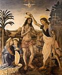
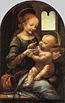
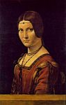
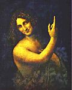

Leonardo Da Vinci
Zum Vergrößern der Abbildung bitte auf das Bild klicken
1 
2 
3 
4 
5 
6 
7 
8 
9 
10 
11 
12 
13 
14 
15 
16 
17 
18 
Leonardo Da Vinci
(Vinci 1452 - Clos-Lucé 1519)

Einführung
Leonardo Da Vinci, zu einer Symbolfigur der Renaissance gewordenes Universalgenie, übertrifft mit Ausstrahlung und Einfluss bei weitem diese Welt der Maler, die zunächst seine war. Hier sahen die Zeitgenossen sein wirkliches Königreich, wo er seit bald fünf Jahrhunderten der unumstrittene Herrscher ist. Aber dieser Heiligenschein klagt das Paradoxe seines seltsamen Schicksals nur an. Toscan, der die Nachforschungen über das Florentiner 14. Jahrhundert betreibt, zusammenfasst und übertrifft, verlässt mit dreißig Jahren Florenz, ohne dort einen Platz an der Sonne erobert zu haben; Die Zeit in Mailand kennzeichnet den Höhepunkt seiner Karriere. An der Loire ging sein unstetes Leben zu Ende. Er malte nur eine kleine Zahl von Bildern (manchmal unvollendet), ungefähr zehn werden in den sich in den Archiven befindenden Unterlagen oder von Zeitzeugen erwähnt, ungefähr dreißig werden ihm insgesamt zugeschrieben, davon sind mehr als ein Drittel verloren. Schließlich hat dieser Mann mit einer unermüdlichen Neugier, der sich gleichzeitig leidenschaftlich für Mathematik, Naturwissenschaften, Künste und Techniken begeisterte, ein Notizbuch, tausende Zeichnungen und Skizzen, erstaunliche Projekte, jedoch keine große plastische oder mechanische Umsetzung, keine veröffentlichte Abhandlung hinterlassen. Von außen betrachtet erscheint Leonardo als ein genialer Alleskönner, Abenteurer der reinen Forschung, die ihn als einziges interessierte, dessen Temperament zwar nicht seine Kreativität aber seinen Erfindungswillen lähmte. Seit einem Jahrhundert werden über die Deutung des "mysteriösen Vinci" zahlreiche internationale, kritische oder lyrische Bücher geschrieben. Die Informationen erlauben nur die Rekonstruktion der wesentlichen Daten in Leonardos Karriere, die vielfachen Richtungen seiner Forschung in Erinnerung zu rufen, eine Gesamtbilanz seines künstlerischen Schaffens zu ziehen.
Leben und Werk
Einführung
Leonardos Leben, unruhig, entschlusslos, ohne jedoch dramatisch wie das eines Michelangelo oder eines Caravage zu sein, kann sehr genau in drei fast gleichlange Perioden (die Kindheit ausgenommen) eingeteilt werden: eine Florentinische, die 1482 zu Ende geht, Ausbildungszeit, in der sich Leonardo vor allem der Malerei widmet; die zweite (1482-1499) am Hof zu Mailand, in der seine Tätigkeiten als Ingenieur, Bildhauer, Dekorateur mit denen des Malers konkurrieren; die letzte (1499-1519), die Wanderjahre, in der, ohne dass der Künstler ganz verschwindet, die Forschung in der reinen Wissenschaft einen immer größer werdenden Raum einnimmt.
Die Florentinischen Jahre
Leonardo wird 1452 in Vinci, einem im Vorgebirge des Apennin zwischen Weinbergen und Olivenbäumen gelegenen Ort, geboren. Er wohnt dort bis zu seinem sechzehnten Lebensjahr. Als unehelicher Sohn eines jungen Grundbesitzers, der später Notar der Lehensherrschaft wird, kennt er seine Mutter kaum, zweifellos bescheidene Verhältnisse. Aufgewachsen bei seinen Großeltern und seinem Vater, erscheint er aber in einer Zeit, in der die Unehelichkeit niemanden schockiert, keineswegs als das "frustrierte" Kind, das man sich manchmal vorstellt (und das Freud zu einem berühmten Essay inspiriert hat). Vielmehr behält er von dieser Kindheit auf dem Land seine Vertrautheit mit der toskanischen Natur, der Landschaft (die erste bekannte Zeichnung von Leonardo ist von 1473. Es ist die Arno-Landschaft), den Tieren, Pflanzen, Kuriositäten der Natur (wie diese Grotte, die er erforschte. Dabei siegte der Wunsch, die "seltsamen Formen der künstlerischen Natur" zu entdecken, über die Angst.), vielleicht auch eine gewisse Ungeschicklichkeit im sozialen Verhalten und die Berufung zur Einsamkeit zurück.
1469 stirbt der Großvater, der Jugendliche folgt seinem Vater und Onkel, die nach Florenz übergesiedelt sind, und beginnt in der Werkstatt von Verrocchio, ebenfalls als Bildhauer und Maler angesehen, eine Ausbildung. 1472 schreibt er sich in die "Campagnia dei Pittori" ein und scheint das Vertrauen seines Meisters zu haben. Sie arbeiten an seinem Hauptbild, der Taufe Christi, zusammen. (1) (Er hat die knienden Engel und den Vordergrund der Landschaft gemalt). Man erwähnt seine Schönheit, seine Kraft, seinen Geschmack für die Mathematik und die Musik und auch seinen Hang zur "griechischen" Liebe und folgt damit dem Zeitgeist (eine Denunzierung von 1476 bleibt ohne Folgen, lässt aber kaum Raum für Zweifel). Ab 1480 lebt er nicht mehr bei seinem Vater, sondern in einem Haus neben dem Kloster von San Marco, das Laurent de Médicis gekauft hat und der ihn zur Gestaltung der Gärten anstellte. Seine Rolle scheint ihm jedoch sehr bescheiden. Leonardo hält Abstand zu diesem humanistischen Hof, an dem Botticelli der bevorzugte Maler und Marsilio Ficino der Denker sind: Eher wissenschaftlich und positiv als mystisch scheint er gegenüber dem neapolitanischen Snobismus ein Rebell. Er bekommt überall Aufträge: 1478 von der Lehensherrschaft (Altarwand für die Kapelle des Palazzo Vecchio, die Filippino Lippi fertig stellte); 1481 vom Kloster San Donato a Scopeto (Anbetung der Heiligen Drei Könige (2) im Uffizien-Museum, das er unvollendet ließ); und zahlreiche nicht dokumentierte Bilder ( Verkündigungen im Louvre und den Uffizien Benois-Madonna (3) in der Eremitage in Sankt Petersburg etc.) müssen in diese Periode gehören. Dennoch zählt er noch immer nicht zu den künstlerischen Favoriten seiner Zeit. So gehört er 1482 nicht zum auserwählten Team, das zur Schmückung der Sixtinischen Kapelle nach Rom reist. Da er nicht zu den schnellsten Künstlern gehört aber sich dennoch seiner materiellen Sorgen entledigen möchte, sucht er sich (und er wird ihn sein Leben lang suchen) einen Mäzen, der die Vielfältigkeit seiner Talente zu schätzen weiß. Er findet ihn zunächst in Mailand.
Die Jahre in Mailand
Leonardo siedelte im Frühjahr 1482, als er erfuhr, dass Ludovic le More zum Ruhm seines Vaters ein Reiterstandbild errichten will, nach Mailand über und schlägt dem Prinzen vor, ihn "seine Geheimnisse zu lehren". Eine berühmtes Gesuch zählt in zehn Artikeln seine Fähigkeiten als Ingenieur auf, Städte und Häfen zu befestigen, Kanonen und Kriegsfahrzeuge herzustellen, während seine Werke in Friedenszeiten mit den Werken "jedes anderen gleichziehen können", sei es bei der Konstruktion von öffentlichen Gebäuden, sei es beim Bau von Wasserleitungen "von einem Ort zum anderen", ohne dabei die Bildhauerei und Malerei zu vergessen. In den Dienst von Ludovic eingetreten, der ihn wertschätzt und ihm einen lange währenden Wohlstand sicherte, beschäftigte ihn das Reiterstandbild lange Jahre: Nach unzähligen Studien wird 1493 nur das Pferdemodell aufgestellt; nach dem Sturz von Sforza verschwand es. Aber Leonardo, dem noch genug Freizeit blieb, um sich in Mathematik (Er besucht die Wissenschaftler von Pavie, mit Luca Pacioli verband ihn ein Freundschaft) zu perfektionieren und seine Forschungen im Bereich der Naturwissenschaften fortzusetzen, war in vielen Bereichen beschäftigt: Er ist Organisator von Festzügen eines prunkenden Hofes, aber auch Dekorateur des Castello Sforzesco (Raum "delle Asse" mit den Gemüse-Arabesken an seiner Decke), Wasserleitungen in die Wassergräben des Palastes, Restaurator der "Sforzesca", landwirtschaftliche Nutzung, Modell der Leitungen. Und er liefert, trotz der Feindschaft zu Bramante, "Primus" in der Lombardei-Architektur, ein Projekt für die Laterne des Doms zu Mailand (1487) und wird zur Beratung bezüglich der Restauration der Kathedrale zu Pavie (1490) gerufen.
Was die Malaufträge – neben den wahrscheinlich geschaffenen, aber nicht dokumentierten Portraits, (Portrait La Belle Ferronnière (4), im Louvre, der Musiker (5), in Mailand, die Dame mit dem Hermelin (6), in Krakau usw.) – betrifft, so spielen sie nur am Anfang und Ende seiner Zeit in Mailand eine erwähnenswerte Rolle. 1483 entsteht die Altarretabel für die Brüderschaft der Conception a Francesco Grande, mit deren Seitenteilen Ambrogio De Predis beauftragt wird, während Leonardo den Auftrag für den Hauptteil, eine Jungfrau mit Kind, erhält. Heute schreibt man diesem Werk eher das mit der Jungfrau auf den Felsen von Lourdes (National Gallery) als das im Louvre ausgestellte Werk, das wohl etwas früher entstanden ist, zu. Das Werk, das unvollendet bleibt, war Gegenstand eines Streits mit der Brüderschaft, der erst 1506 beigelegt wurde. Die Freske von Das letzte Abendmahl (8), für das Refektorium von Santa Maria delle Grazie, mit dem er 1496 begann, wurden allerdings 1498 fertiggestellt. Es rief einstimmige Bewunderung hervor und verschaffte ihm den Rang eines der bedeutendsten Meister Italiens.
Die Wanderjahre
Aber Das letzte Abendmahl ist der Gesang eines glücklichen Schwans: Im folgenden Jahr floh Ludovic, der von der Armee Ludwigs XII. gejagt wurde. Leonardo hält sich einige Zeit in Mantou – am Hof von Isabelle d'Este, seiner Bewundererin (deren Portrait er in Kohle skizziert) -, in Venedig (1500), in der Romagna (1502) auf, wo er das Vermögen von Cèsar Borgia verwaltetet, der ihn zum Inspektor seiner Befestigungsanlagen ernannte. Aber die Amtsenthebung des Condottiere durch den neuen Papst, Julius II, beendet diese Periode. 1503 kehrt Leonardo nach Florenz zurück, wo sein Vater stirbt; Er dort wird mit Ehren empfangen, stößt aber auf einen jungen rauen Rivalen: Michelangelo. Um die großen Siege von Florenz zu feiern, beauftragt ihn die Lehensherrschaft mit einer Wandmalerei zum Gedenken an die Schlacht von Anghiari. Michelangelo wird hingegen mit der von Cascina beauftragt. Die beiden Werke werden 1505 gleichzeitig ausgestellt. Doch von Erfolg gekrönt sind allein die historischen Werken Michelangelos im Gegensatz zu den, das Publikum brüskierenden Reitern von Leonardo. Dieser verzichtet sehr rasch auf den Freskenauftrag. Das Werk wird zerstört und ist nur durch Entwürfe und Kopien (Das gleiche gilt für eine Leda (9) bekannt. Als ob das Unglück noch nicht groß genug ist, scheitert auch die Umleitung des Arno, die Leonardo wegen der Gründung Pisas plant, wegen seiner Berechnungsfehler. Verletzt verlässt er seine Heimat und kehrt nach Mailand zurück, wo ihn die französischen Besatzer feiern: Der Gouverneur, Charles d'Amboise, meint, dass das Ansehen "wenngleich sein Name in der Malerei ein Begriff, in allen anderen Bereichen unverdienterweise unbekannt geblieben sei". Leonardo nimmt sich die früheren Stadtpläne wieder vor, nimmt den Auftrag eines neuen Pferdestandbildes – dieses Mal für das Grab von Giangiacomo Trivulzio, den Condottiere, der die Sforza verjagt hatte! an -, 1512 werden jedoch die Franzosen verjagt.
Dieses mal ist es Rom, das Leonardo reizt: Der neue Papst, Leon X, ist ein Medici und Mäzen. Sein Mann des Vertrauens ist jedoch Raffael. Giuliano de Medici, Bruder des Pontifex, nimmt sich Leonardos an, gewährt ihm Unterkunft und beauftragt ihn mit der Trockenlegung des Pontins-Feuchtgebiets. Aber niemand denkt an den alten Meister, als durch den Tod von Bramant der Platz der Bauleitung für Sankt Peter frei wird. Versunken in seine Forschung über die Quadratur des Kreises und sein anatomisches Sezieren gibt er die Figur eines instabilen, der wirklichen Welt entfremdeten Träumers ab. So sieht es Raffaels Freund, Baldassarre Castiglione (Il Cortegiano, 1508-1518): "Einer der bedeutendsten Maler der Welt beschäftigt sich mit Philosophie, oder er hat so seltsame Konzepte und so neue Hirngespinste, dass es ihm nicht gelingt, sie mit all der Schärfe seines Pinsels zu malen."
Es ist nur zu selbstverständlich, dass er, die Augen geöffnet, durch den Tod von Giuliano 1516, seiner größten Stütze beraubt, die Einladung eines jungen, siegreichen Königs annimmt, der davon träumt, den Lebensstil der italienischen Höfe in den Loire-Schlössern einzuführen. Im Mai 1516 stellt er sich gemeinsam mit dem jungen gutaussehenden Francesco Melzi (1493-1570), seinem Lieblingsschüler, Franz I. vor und bringt einige Meisterwerke aus seinen Wanderjahren mit, die der König kauft. (heute im Louvre): Mona Lisa (10), die Jungfrau, Das Jesuskind und die Heilige Anna (11), der Heilige Johannes der Täufer (12) (und zweifellos Bacchus (13), Abwandlung eines anderen Heiligen Johannes des Täufers). Seine Unterkunft auf dem Landsitz von Clux, in der Nähe von Amboise, eine sehr hohe Pension und die Freundschaft des Souveräns, der ihm gerne zuhört, sichern ihm nach soviel Umherreisen einen noblen und friedvollen Lebensabend. Eine Lähmung der Hand hindert ihn daran, zu malen, jedoch nicht daran, etwas zu erschaffen. Durch Projekte über Monumental-Treppen (die ihn vielleicht zu der von Chambord inspirierten), der Loire-Saône-Kanal, die Trockenlegung der Sologne mit dem Bau einer neuen Stadt in Romorantin bekundet er seinen Willen, "weiterzumachen". Aber im Frühjahr 1519 wird er krank und ernennt Melzi zu seinem Testamentsvollstrecker, indem er ihm alle seine Manuskripte vermacht. Er stirbt am 2. Mai. Er wird in der Kirche Saint-Florentin zu Amboise beigesetzt. Seine sterblichen Überreste werden während der Religionskriege verstreut.
Der Denker, der Gelehrte
Dieses gleichzeitig ruhmreiche und von Misserfolgen durchwirkte Leben entspricht dem Charakter eines einzigartigen, für seine Zeitgenossen verblüffenden Mannes, den sie als verschlossen beurteilen, und der noch heute mit Beweisstücken über seine Gedanken überrascht. Seine umgekehrte Schrift eines Ungeschicklichen hat die Erfindungsgabe der Fachleute für Handschriftdeutung angeregt. Seine von Melzis Sohn an seine Bewunderer verteilten zahlreichen Notizbücher erfahren mehrfache Veränderungen: Die wichtigsten werden in der Ambrose-Bibliothek in Mailand und im Institut de France aufbewahrt; aber viele sind verloren gegangen, und wieder andere werden erst 1967 in der Nationalbibliothek von Madrid wiedergefunden. Zusammenhanglose Notizen über wissenschaftliche Beobachtungen mit Skizzen, Anmerkungen über Methoden, philosophische Reflexionen lassen uns das Leben und die Gefühle ihres Autors unbekannt erscheinen. Ruhe, die offen legt, was Valéry als Leonardos "königliche Gleichgültigkeit" bezeichnet. Gleichgültig gegenüber dem sofortigen Ruhm, den weltlichen Gütern, ausgenommen in dem Maße, wie sie die Freiheit seiner Forschung sicherstellen. Zudem gilt er als unberechenbar in seinen Launen, seinem Ausweichen, seiner wechselnden Begeisterung, besitzt mangelndes Durchhaltevermögen für ein im Entstehen befindliches Werk und gibt als Perfektionist angesichts der selten erreichbaren Perfektion schnell auf. Eine einzige Leidenschaft reizt ihn: die vollständige Kenntnis des sichtbaren Universums in all seinen Strukturen und Bewegungen. Es ist eine "intellektuelle Leidenschaft, aufgrund der die Sinnlichkeit verschwindet" und aus der "die Liebe [...] entsteht, die in dem Maße wächst, in dem dieses Wissen immer sicherer wird".
Rationelles Wissen, sicher. Soll man Vasari glauben, nach dem Leonardo "die größere Ehre hatte, Philosoph als denn ein Christ zu sein?" Auf jeden Fall bleiben ihm die Vorstellung des Falls und der Erlösung, das christliche Drama des Heils fremd. Ebenso steht er dem ästhetischen Heldentum seiner Zeitgenossen, der Mythologie als Archäologie gleichgültig gegenüber. Mit einer Art stoischer Ruhe, mit der Weichheit der Einsamkeit bleibt seine Haltung die des Gelehrten, der die Argumente der Mächtigen zurückweist und sein Urteil auf der Erfahrung begründet.
Aber Gelehrter, wie und in welchem Maße? Leonardo erschien lange Zeit als das Abbild eines autodidaktischen Giganten (Er selbst schrieb: "Man begründet die Kritik an mir damit, dass ich keine Initialen besitze"), unverständliche Vorzeichen. Anfang des 20. Jh., ließ ihn eine zweifellos übertriebene Reaktion zu einem Gelehrten, einem Erben allen wissenschaftlichen Gedankenguts des Mittelalters werden. Heute tendiert man zu einer vermittelnden Meinung: Leonardo ist kein Analphabet, teilt aber die durchschnittliche Kultur der Florentiner seiner Zeit. Er kann auch Latein und kenntdie Metamorphosen des Ovid. Er kennt Dante und Petrarca, sein Hunger wird jedoch vor allem von den Bestien und der moralisierten Zoologie des Mittelalters sowie den florentinischen Satirikern gestillt.
Sein Bild des Kosmos, Spiel der harmonischen und riesigen Kräfte des Lichts gemeinsam mit einer tiefgreifenden Einheit der Natur und der Seele offenbart einen diffusen Platonismus dieser Zeit, zu dem noch die Lehrsätze von Nicolas de Cusa über die Bewegung, Prinzip des gesamten Lebens, hinzukommen. Andererseits musste sich seine mündliche Ausbildung zum Praktiker, die er in der Werkstatt von Verrocchio begonnen hat – Geometrie, Perspektive usw. als Folge des Lesens von Abhandlungen über die Mechanik, "Maschinentheater", die in der zweiten Hälfte des 15. Jh. in Italien bereits zahlreich waren, dank des Besuchs verschiedener Wissenschaftler erweitern. Leonardo wird niemals ein Gelehrter vom Typ des Kopernikus oder Newton, die die Wissenschaft mit ihren Entdeckungen oder Hypothesen erneuern, werden. Seine Physik-Terminologie bleibt ungenau und widersprüchlich. In der Tat ist er, feiert man auch "die überlegene Sicherheit in der Mathematik", ein vor allem "visueller" Mensch, für den das Auge, "Fenster zur Seele", der wichtigste Weg ist, über den unser Intellekt das unendliche Werk der Natur vollständig schätzen kann. Seine universelle Neugier lehnt unsere Unterscheidung zwischen reiner Wissenschaft und angewandter Wissenschaft, den schönen und den mechanischen Künsten ab. Es vergrößert und trägt zur Perfektion dieses Typs Ingenieur-Künstler bei, deren erstes Modell Alberti gewesen ist.
Seine Forschung umfasst gleichzeitig Astronomie und Geologie, Geometrie und Mechanik, Optik und Akustik, Botanik und Metallurgie. In den Notizbüchern, die durch den Reichtum oder die Kargheit seiner Notizen auffallen, werden gleich drei "Dominanten" offenkundig. Die erste ist die Anatomie, mit diesen genauen Beschreibungen, Ergebnis des vielen Sezierens, illustriert mit wunderbaren Zeichnungen, von denen einige der vergleichenden Anatomie (junger Mann/ alter Mann; Mensch/ Tier) gewidmet sind. Leonardo ist von daher eine Art einzelner Vorbote von Versal, dem Begründer der modernen Anatomie. Danach kommt die bei Ingenieurarbeiten angewandte Mechanik – mit ballistischen Entdeckungen, Kriegsfahrzeugen, Pumpen und Baggern, Brücken und Kanälen – sowie auf scharfsinnigen und neuen Analysen des Vogelflugs basierende Flugmaschinenprojekte. Schließlich besteht das Leben auf der Erde aus der Mechanik der Flüssigkeiten und der Geologie. Nichts regte Leonardos poetische Vorstellungskraft mehr an als das "Heldenballett" der Erde und des Wassers. Von daher die Studien der Strudel, die so bemerkenswerten Panorama-Abhandlungen, die die Entstehung der Alpentäler zeigt; von daher die Analyse der Fossilien, der Muschelformen, des Grundes für ihr Vorhandensein sowohl auf den Bergen als auch in den Meeren. Von daher vor allem die apokalyptischen Visionen, die das Schicksal der Menschen mit den Katastrophen des Kosmos verbinden: "Man wird auf der Erde Geschöpfe vorfinden, die sich unaufhörlich gegenseitig töten. Ihre Boshaftigkeit wird keine Grenzen kennen. Ihre Gewalttätigkeit wird die großen Wälder auf der Erde zerstören... Oh Erde, was hält dich also davon ab, dich zu öffnen und den Menschen in die tiefsten Risse des Abgrundes herunterzuschlingen." Es ist dieser Leonardo, kosmischer Visionär und "Magier", sanft durch den Bart und die gelockten Haare, das vermutete strenge Selbstportrait, den die Rötelzeichnung in der königlichen Bibliothek von Turin wachruft.
Der Künstler
Was bleibt von dieser großen Leistung auf dem Gebiet des künstlerischen Schaffens? Für die Architektur und die Bildhauerei, Projekte und, was das erste angeht, rein theoretisch. Die schönsten Skizzen von mit Chorkapellen flankierten Kirchenkuppeln – die von Bramante stammen könnten – bestätigen die Vorliebe der Renaissance für das Bauwerk nach zentralem Plan, Symbol für Perfektion. Was die Bildhauerei anbetrifft, so sind zahlreiche Studien den Monumenten von Sforza und Trivulzio gewidmet: Aber nur der Sockel und die Bewegung des mehr oder weniger aufgebäumten Pferdes erinnern an Leonardo; Der Reiter fehlt oder ist kaum skizziert. Skulpturen, die ihm zugeschrieben werden, keine ist sicher, sogar die wahrscheinlichste, kleine Pferdegruppen aus Bronze in Budapest. Im Grunde scheint die Bildhauerei Leonardos Interesse nur mittelmäßig geweckt zu haben. Die Tatsache, dass sie langlebiger als die Malerei ist, verleiht ihr keine Würde; sie ist für ihn "minderwertig, da sie nicht die transparenten oder leuchtenden Dinge darstellen kann". Sie bleibt "eine Kunst der sehr kurzen Gespräche", während die Malerei, "cosa mentale", deren "Ziel die Darstellung von Menschen und den Seelenabsichten" ist, eine "wunderbare Kunst mit sehr großen Spekulationsmöglichkeiten ist".
Dieser hohen Kunst scheint Leonardo wohl eine Abhandlung gewidmet zu haben, die er in Mailand verfasst und Ludovic angeboten hat, die aber verschwunden ist. Der Trattato della pittura (14) (Codex urbinas, Bibliothek des Vatikan), veröffentlicht Mitte des 17. Jh., ist eine reiche und ungewöhnliche Sammlung, die Melzi zu verdanken ist. Die Notizbücher (15), liefern uns zahlreiche und subtile Beobachtungen, die alle Aspekte der Kunst des Malers, Skizze, Perspektive, Bildtechnik hervorhebt. Der wesentliche Charakterzug ist der Vorrang der Skizze nach der Natur, über die Studie der Antike, nach dem Umriss. Das Geheimnis der Malerei liegt im Spiel von Schatten und Licht, d.h. hell-dunkel: "Derjenige, der es vermeidet, Schatten in sein Werk zu bringen, macht es wegen des Vulgären, das die Leuchtkraft der Farbe und die Schönheit des Wunders des Lichtes nur verschmäht, für den echten Verstand verachtenswert." Oft findet man bei Leonardos Notizen über das unklare Rosa des frühen Morgens, den weitreichenden Effekt des Rauchs und Staubs in den Städten, die Farbe der weit entfernt liegenden Berge, die im Winter nicht mehr blau sind, oder das Rot der Sonne in den Zeitabständen zwischen dem Regen gleichzeitig minutiöse und poetische "Modernität". Und dieser "Luminismus" erklärt die große historische Rolle eines gegenüber seinen Werken so geizig eingestellten Malers.
Die ersten erhaltenen Zeichnungen von Leonardo sind in die florentinische, plastische, sehr beschreibende und trockene Tradition einzuordnen. Lippi, Verrocchio, Ghirlandaio in den Madonnen Litta (16) und Benois (alle in der Eremitage), den Verkündigungen, dem Heiligen Hieronymus (17) unvollendet im Vatikan, kraftvolle skulpturmäßige Studie der Anatomie. DieAnbetung der Heiligen Drei Könige in den Uffizien unterscheidet sich nur durch die Original-Konzeption der Szene: Sie ersetzt die prunkvollen Festzüge, für die Gozzoli das schönste Beispiel gegeben hat, durch das Bild einer verblüfften und von der ungewöhnlichen Vision in Panik versetzten Menschenmenge. Aber werden die Mailänder Werke – ist es der Einfluss der feuchten und saftigen Landschaften der Lombardei? - den dunstigen Umriss und die Feuchte des "sfumato", die grünlichen Töne der Weiten mitbringen: sowie die Jungfrau auf den Felsen, mit dem geheimnisvollen Wassergrund und den im Licht geschmolzenen Felsenspitzen, von daher das Halbdunkel der Grotte. Und der durch Das letzte Abendmahl - das einzige vollendete, leider halbtote große Werk - hervorgerufene Schock bringt nicht nur Neues in die Komposition, die die von Andrea del Castagno wieder aufnimmt, sondern teilt die Apostel in heimliche Unterhaltungen führende Gruppen ein: psychologisches Drama vor der Ankündigung des Verrats und der Unsicherheit über den Verräter; etwas gleichbedeutend Neues ist die räumliche Verschmelzung, die diese Weichheit der Farbe bewirkt, dieser Halbtag, in dem die Personen vor der Flucht aus der Tiefe auf die blauen Hügel baden.
Der andere neue Reiz des Malers Leonardo ist das Rätsel der Gesichter auf den Werken der letzten Periode: Die seltsame Konzeption der der Jungfrau, des Kindes Jesus und der Heiligen Anna, oder das Anna, während sich die Jungfrau auf das Kind wirft, als ob sie es schützen möchte, untätig bleibt und lächelt, eine Art das unausweichliche Schicksal verkündende Sphinx; die träumerische Schönheit und Ruhe der Mona Lisa, einer furchtsamen und entfernten Leda, eines Johannes des Täufers und eines Bacchus. Möge es sich um das Portrait einer florentinischen Dame – Mona Lisa, Frau von Francesco del Giocondo, handeln – oder um sich vorgestellte Figuren handeln, es ist das gleiche ironische und sanfte Lächeln, das gleiche Zwittergesicht mit dieser "zärtlichen Melancholie", die Stendhal verzauberte: Traumbilder, die das Mysterium des Universums als dekadente Ästhetik am Ende des 19. Jh. symbolisieren. Aber selbst für diejenigen, die gegen eine gewisse "Monalisaverherrlichung" sticheln, behält Leonardos Schöpfung ihre historische Bedeutung und ihren Wert als Symbol.
Was die Zeichnungen angeht, sind sich alle zeitgenössischen Kritiker einig, dass sie ausreichen, um Leonardo unter die größten Meister einzuordnen. Man kennt mehrere Tausende, von denen jede anders ist. Der größte Teil sind einen Text erklärende Skizzen, was übrigens ihren ästhetischen Wert nicht ausschließt. Betrachtet man die isolierten Zeichnungen und großen Alben von Windsor und Amboise, ist man jedoch verblüfft von ihrer Intensität, ihrem Beben vor Leben sowie von ihrer Vielfalt.
Vielfalt der Techniken: Zeichnungen auf dem Höhepunkt der Jugend, die die Rötelzeichnung Stück für Stück entthronen, mit weißer Kreide hervorgehobene Zeichnungen auf schwarzem Stein, weicher und subtiler; und, ständig Federzeichnungen, kursiver, Kommentare zu einem Text oder die erste Skizze zu einer Komposition. Vielfalt auch der Stile: Bestimmte Zeichnungen besitzen die Präzision eines Goldschmiedestücks oder einer Medaille wie das das berühmte Profil eines Manns mit Helm (ein wahrhaftiges Ausnahmewerk) im British Museum. Andere beschränken sich auf Kurven- und Ringspiele, die mit einer einzigartigen Kraft (Studien von Katzen, Ritterschlachten für die Schlacht von Anghiari (18)), die Bewegung in der Tiefe suggerieren. Die Themenvielfalt ist nicht geringer, denn sie spiegelt Leonardos ganzes Universum wieder: Das bereits in Erinnerung gerufene des Gelehrten und das des Künstlers. Es sind die vielfachen Studien für die Anbetung der Heiligen Drei Königz, die Jungfrauen, Das letzte Abendmahl, Die Schlacht, leidenschaftlich, weil sie es ermöglichen, das häufige Zweifeln und die Bewusstseinskrisen ihres Schöpfers nachzuvollziehen. Es sind die "Köpfe des Ausdrucks", manchmal heldenhaft, öfter grimassenhaft, sogar karikaturhaft, die sehr stark den Zeitaltern und Charakteren entgegenstehen. Es sind die Tier- und vor allem Pferdestudien, die Studien der Pflanzen und Äste, gleichzeitig voll Liebe und fast beunruhigend vor Genauigkeit und Intensität. Es sind schließlich die Landschaften, bald von bukolischen Natur mit ihren Landarbeitern und Sämännern, bald von einer elementaren und konvulsiven Welt. Die Bilder der Flut zählen zu Leonardos erstaunlichsten Entdeckungen.
Es ist die Persönlichkeit des "großen Träumers", für den die Menschen im Laufe der Zeitalter empfindsam geworden sind. Die Einfluss des Malers war beträchtlich, urteilt man nach der Vielfältigkeit der Varianten und Kopien aus dem du 16. Jh. - die den Kritikern große Probleme bereiten -, durch Leonardos Widerspiegelung in einigen Florentinischen Schülern wie Lorenzo di Credi (1456-1537) oder Piero di Cosimo (1462-1521), und durch die Wichtigkeit seines Einflusses in der Lombardei, mit einer robusten, manchmal aber auch ländlichen Gruppe. Bernardino Luini (um 1485-1532), Ambrogio De Predis (1455-um 1510), Giovanni Antonio Boltraffio (1467-1516).
Als letzte große Figur des 14. Jahrhunderts ist er auch der Begründer der "Hochrenaissance": Man erkennt seinen Einfluss bei Raffael (der für seine Athener Schule von den Aposteln von Mailand inspiriert wurde), bei Fra Bartolomeo (1472-1517) und bei Andrea del Sarto (1486-1530). Man muss aber vor allem seinen leuchtenden Einfluss hervorheben, den seine Unruhe und universelle Neugier vier Jahrhunderte hindurch hinterlassen haben bei: Rubens und Prud'hon, Goethe, Stendhal und Valéry haben ihn als Leitfigur eines Malers, aber auch als universalen Menschen, dem Dichter und Künstler verbundenen Gelehrten geehrt.

© 2006 Umanista.Net